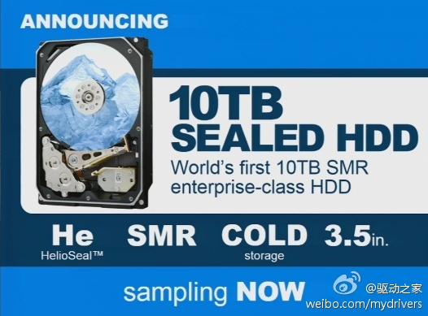

Disk is tape. Tape is dead. 100MB/s,即使不进行读操作，扫描一遍10TB需要一天多。离成为/dev/null不远了。
@快科技官方:
【单碟2TB？10TB硬盘幸福降临！】希捷刚发布8TB，HGST就宣布了全球首款10TB硬盘，充氦密封技术(HelioSeal)加叠瓦式磁记录(SMR)，通过缩小碟片磁轨间的保护距离，特别是允许磁轨互相重叠，来提高存储密度。几张碟片没说，即便7碟的话单碟也有1.4TB，5碟那就是2TB了！ 单碟2TB？10TB硬盘幸福降临！
单碟2TB？10TB硬盘幸福降临！
- 